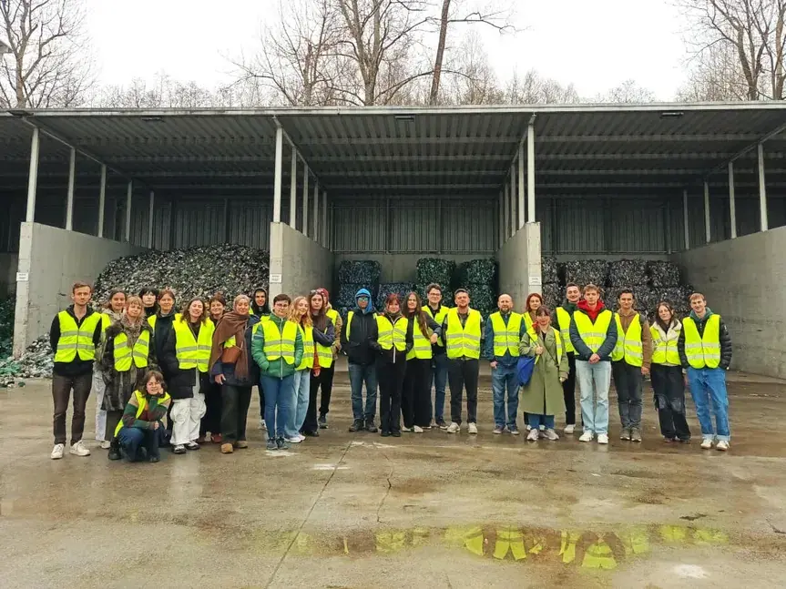
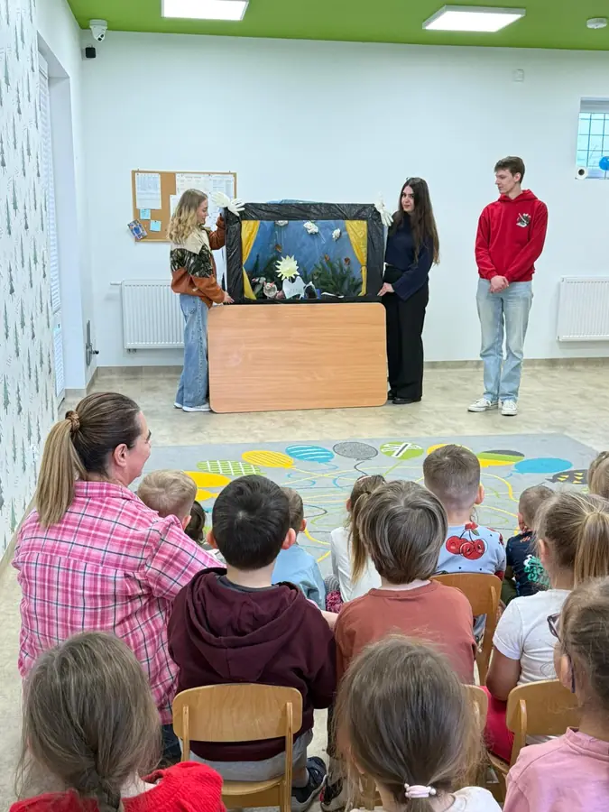
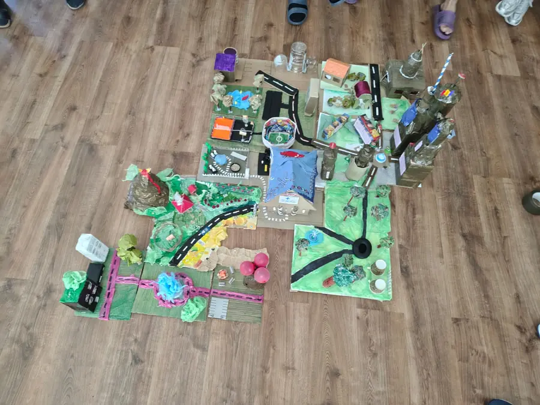
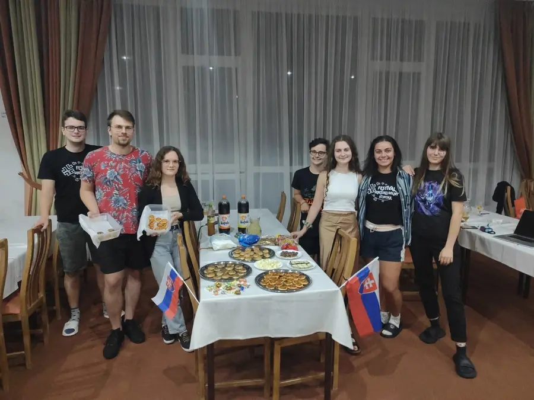
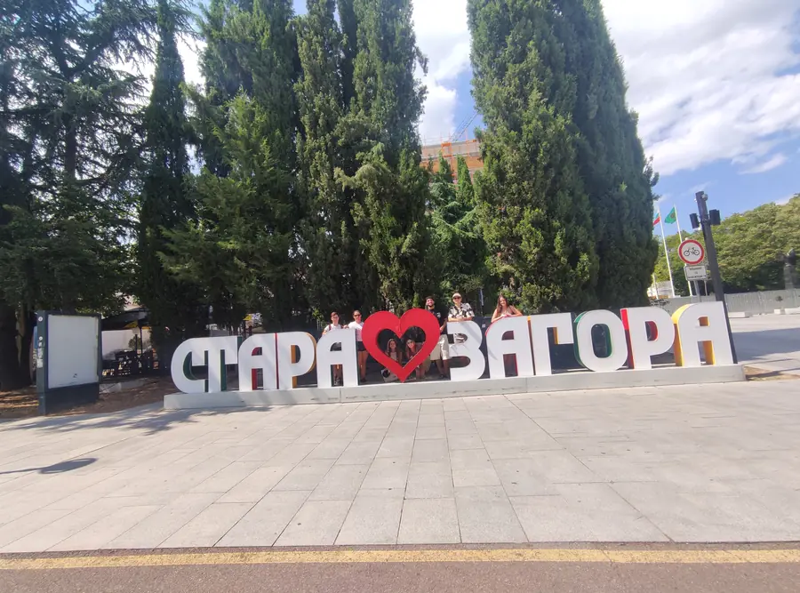

Projekty
Naše aktivity.
Cez aktivity, ktoré organizujeme s podporou Erasmus+ aj vlastnými silami a spolu s partnermi doma aj v zahraničí, spájame mladých ľudí: spolu sa učia, tvoria a nachádzajú priateľstvá cez hranice.


Populism 101
Týždeň v Orahovici o populizme: čo to je, prečo funguje a ako kriticky premýšľať o politike a médiách.



The Masters of Puppets
Odpad nazbieraný okolo Rymanówa sa zmenil na bábky, rekvizity a príbeh a nakoniec na bábkové predstavenie pre deti v škôlke.


Smart & Sustainable: Youth vs. Fast Fashion
Sedem dní na prelome rokov s mladými zo Slovenska, Poľska, Rumunska a Bulharska o tom, čo sa skrýva za oblečením, ktoré nosíme: koľko rýchla móda naozaj stojí planétu aj ľudí, ktorí ho šijú, a ako to môže zmeniť kreativita, digitálne nástroje a každodenné rozhodnutia.



ReToy
Týždeň o tom, ako dať odpadu druhý život. Mladí ľudia zo šiestich krajín upratali centrum Košíc, z nazbieraného odpadu postavili model inteligentného mesta a popri tom sa naučili 3D tlačiť.



CTRL + ALT + RIGHTS
Týždeň v Starej Zagore u C.E.T. Platform Bulgaria o ľudských právach v digitálnom svete: ako rozoznať dezinformácie a obsah vytvorený umelou inteligenciou, ako sa postaviť za práva iných a ako to všetko premeniť na hry pre ďalších mladých.
Tu môže byť tvoja výmena.
Momentálne nie je otvorená žiadna výzva. Nové oznamujeme na Instagrame.